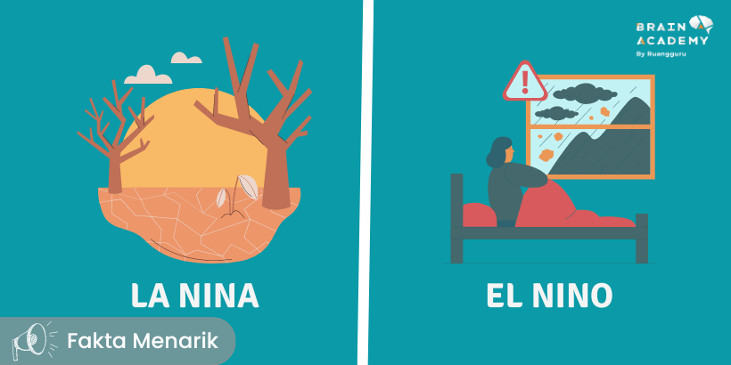

‘Apa Itu Pemanasan Global?’
Pemanasan global atau global warming adalah istilah yang menggambarkan peristiwa
kenaikan suhu rata-rata daratan, lautan dan atmosfer bumi secara bertahap.
Sejak 100 tahun lalu, suhu permukaan bumi mengalami peningkatan sekitar 0,6 derajat celsius.
Oleh karena itu, peneliti dan ilmuwan mulai melakukan penelitian mengenai fenomena ini.
Pemanasan global menjadi isu global, karena tidak hanya dialami atau menimpa bangsa Indonesia
saja dengan bukti di banyak kota dan desa cuaca semakin panas, melainkan hampir seluruh
belahan dunia. Masalah pemanasan global mulai diangkat ke permukaan pada
Konferensi Tingkat Tinggi (KTT) Bumi (Earth Summit) di Rio de Janerio, Brazil tahun 1992.
Sebelum diselenggarakan KTT Bumi tersebut, persoalan seputar pemanasan global tidak terlalu
dianggap serius, dan dianggap sebagai hal yang biasa terjadi dalam setiap kehidupan atau
interaksi antar manusia. Akan tetapi dengan berbagai penelitian atau riset dan ditandai
dengan beragam tanda-tanda dan dampak, pemanasan global semakin mendapatkan perhatian
secara internasional.
KTT tentang bumi yang diselenggarakan di kota Kyoto Jepang tahun 1997, semakin mematenkan
dunia bahwa pemanasan global merupakan musuh utama umat manusia yang mendiami bumi,
sehingga diperlukan upaya untuk mengatasi secara menyeluruh, terpadu dan berkelanjutan.
‘Penyebab terjadinya pemanasan global’
(1) Meningkatnya gas rumah kaca.
Gas rumah kaca terjadi akibat adanya pembakaran minyak bumi, seperti
bahan bakar batu bara serta pembakaran gas alam.
(2) Efek Rumah Kaca.
Efek rumah kaca ini menjadikan panas yang berada di bumi tidak dapat
dipantulkan ke luar angkasa, tetapi terperangkap di atmosfer. efek rumah
kaca ini bermanfaat manusia, namun jika berlebihan akan berdampak buruk
terhadap iklim dan cuaca yang ada di bumi.
(3) Polusi Sampah Plastik Yang Tidak Dapat Didaur Ulang.
Gas metana yang berasal dari plastik yang terkena sinar matahari dikatakan
sebagai salah satu penyebab utama perubahan iklim, hal ini berhubungan
dengan peningkatan pemanasan global. Sampah yang setiap hari dihasilkan
manusia terutama sampah-sampah yang tidak bisa didaur ulang seperti styrofoam
dan plastik juga menjadi sumber lain dari emisi CO2.
(4) Boros Penggunaan Listrik.
Pemborosan listrik membuat cadangan energi listrik menjadi semakin menipis karena
energi listrik memerlukan pembakaran batu bara sehingga meningkatkan pemanasan global.
(5) Polusi Udara Akibat Asap Industri Pabrik.
Industri pabrik menyebabkan banyaknya asap yang yang dihasilkan, dan dapat mengakibatkan
polusi udara yang akan membuat lingkungan tercemar dan terjadinya pemanasan global.
(6) Penebangan Pohon, Kerusakan, dan Pembakaran Hutan.
Perusakan hutan akan menyebabkan pemanasan global, karena hutan memiliki fungsi menyerap
gas karbondioksida, dan hutan merupakan penghasil oksigen.
(7) Penggunaan Chlorofluorocarbon CFC secara berlebihan.
Chlorofluorocarbon (CFC) adalah suatu bahan kimia yang diproduksi untuk berbagai kebutuhan
peralatan rumah tangga seperti AC atau pendingin ruangan dan kulkas. Zat kimia ini dapat
mengakibatkan penipisan lapisan ozon.
‘Dampak pemanasan global’
(1) Meningkatnya temperatur bumi di beberapa wilayah dan perubahan iklim.
(2) Mencairnya glasier sehingga permukaan air laut meningkat dan menyebabkan
daerah pantai akan terendam.
(3) Peningkatan suhu akan menyebabkan meluasnya kepunahan spesies dan kerusakan
pada organisme dan ekosistem.
(4) Hilangnya terumbu karang karena meningkatnya suhu dan pengasaman air laut.
Padahal banyak spesies lain yang hidup bergantung pada terumbu karang.
(5) Curah hujan dan cuaca tidak menentu, sehingga menyebabkan terganggunya hasil panen.
(6) Lapisan ozon (atom oksigen pada atmosfer) menipis. Sementara, dia memiliki fungsi
mengatur dan menyerap sinar ultraviolet yang masuk ke permukaan bumi, menjaga kestabilan
suhu Bumi, dan melindungi dari benda-benda langit yang jatuh ke Bumi.
‘Cara Menyikapi Dan Menanggulangi’
(1) Konservasi Lingkungan
Konservasi lingkungan dapat dilakukan dengan cara menanam pohon dan penghijauan lahan-lahan
dengan kondisi yang kritis. Tumbuh-tumbuhan memiliki proses fotosintetis untuk bertahan ini.
Dalam proses ini, tumbuhan dapat menghasilkan oksigen. Semakin banyaknya oksigen yang dihasilkan
oleh tumbuh-tumbuhan, jumlah gas-gas karbon yang ada di atmoser akan berkurang.
(2) Menggunakan Energi Alternatif
Penggunaan energi alternatif dapat mengurangi penggunaan energi bahan bakar fosil (minyak bumi dan
batu bara). Bahan bakar fosil menghasilkan banyak emisi gas karbon yang diakibatkan oleh proses
pembakaran bahan-bahan tersebut. Energi alternatif yang bisa digunakan oleh manusia sebagai pengganti
sumber energi tak terbarukan adalah energi bio-energy, energi angin, energi panas bumi, energi surya,
dan sebagainya.
(3) Daur Ulang Dan Efisiensi Energi
Aktivitas manusia kerap kali menghasilkan gas yang mengandung karbon, contohnya penggunaan kompor
minyak. Asap yang mengandung gas karbon dihasilkan oleh kompor minyak tanah naik ke udara. Oleh
karena itu, penggunaan kompor minyak sebaiknya diganti dengan biogas. Biogas dapat dimanfaatkan
sebagai sumber energi panas yang berasal dari sampah organik yang telah didaur ulang.
(4) Edukasi Masyarakat Mengenai Masalah Lingkungan
Masyarakat dunia perlu memiliki edukasi dan pemahaman terhadap masalah lingkungan agar sama-sama
bersatu untuk menanggulangi masalah tersebut. Pemahaman mengenai pola pikir dan perilaku manusia
yang berdampak kepada lingkungan diperlukan agar masyarakat memiliki kesadaran dan akan menumbuhkan
rasa cinta terhadap lingkungan. Selain itu, masyarakat perlu menegakkan hukum mengenai perlindungan
dan pelestarian lingkungan.
‘El Nino Dan La Nina’

La Nina dan El Nino merupakan dua fenomena cuaca yang terjadi di Samudra
Pasifik dan memiliki dampak signifikan pada pola cuaca global. Selama kondisi
normal di Samudra Pasifik, angin pasat akan bertiup ke Barat sepanjang ekuator,
membawa air hangat dari Amerika Selatan menuju Asia. Untuk menggantikan air
hangat tersebut, air dingin akan naik dari kedalaman (upwelling). Nah, La Nina
dan El Nino merupakan dua pola iklim berlawanan yang akan “merusak” kondisi
normal tersebut. Ilmuwan menyebut fenomena ini sebagai siklus El Nino-Southern
Oscillation (ENSO).
La Nina adalah fenomena di mana Suhu Muka Laut (SML) di Samudra Pasifik bagian
tengah mengalami pendinginan hingga di bawah kondisi normalnya. Pendinginan SML
ini dapat mengurangi potensi pertumbuhan awan di Samudra Pasifik tengah dan akan
meningkatkan curah hujan di wilayah Indonesia.
Sebaliknya, El Nino adalah fenomena pemanasan Suhu Muka Laut (SML) hingga di atas
kondisi normalnya, yang terjadi di Samudra Pasifik bagian tengah. Pemanasan SML
ini dapat meningkatkan potensi pertumbuhan awan di Samudra Pasifik tengah dan akan
mengurangi curah hujan di wilayah Indonesia.
TERIMA KASIH